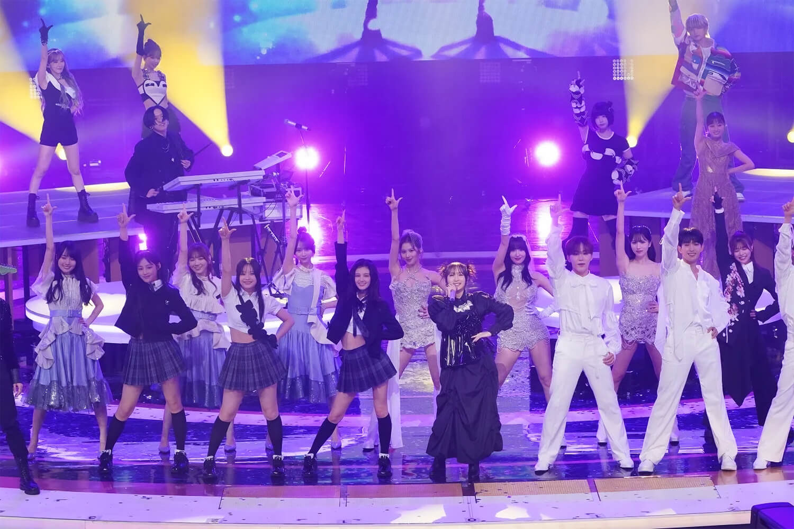

Miembros


Noticias
-
YOASOBI en la 74ª edición del "Kohaku Uta Gassen" de NHK
 -
Colaboración con la marca UNIQLO
Historia
La primera canción lanzada por el dúo es «Yoru ni Kakeru» (夜に駆ける), basada en la historia breve de Mayo Hoshino «Thanatos no Yūwaku» alojada en Monogatary.
El video musical de «Yoru ni Kakeru» se lanzó el 16 de noviembre de 2019, donde superó las 10 millones de visitas en 5 meses en YouTube.
La canción también se hizo popular en la aplicación de videos cortos TikTok.
Posteriormente se lanzó como un sencillo el 15 de diciembre de 2019, donde encabezó las listas de Spotify y Line Music.
Más de 5 meses después de su lanzamiento, el sencillo encabezó la lista Billboard Japan Hot 100 el 1 de junio de 2020.